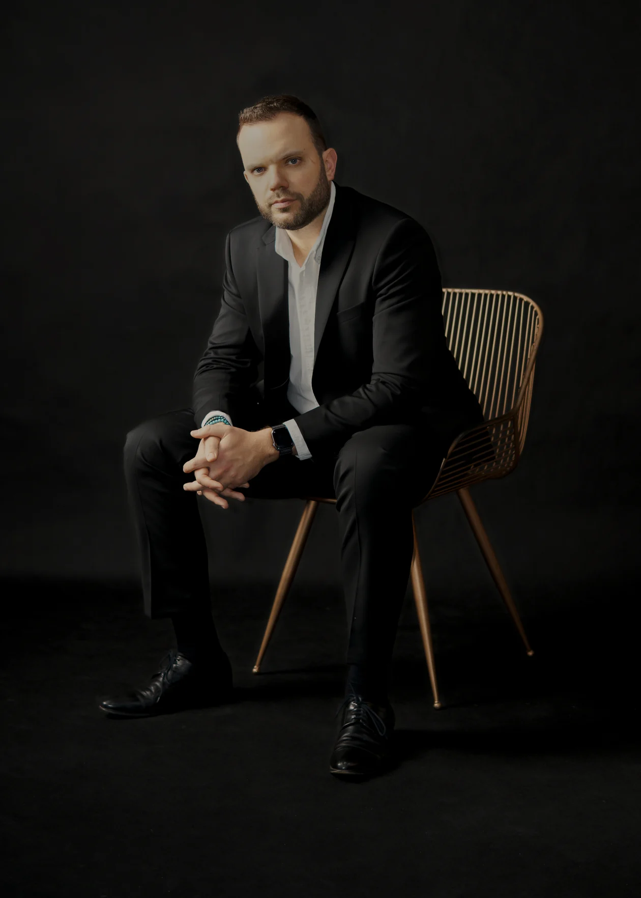

Buduję organizacje gotowe na kolejny etap rozwoju.
Jako CEO Szybex, części Cary Group, odpowiadam za rozwój organizacji, jej zespołów i długofalowy kierunek działania.
Silna organizacja potrafi rozwijać się bez uzależniania każdej decyzji od jednej osoby.
Rozwój firmy wymaga czegoś więcej niż dobrej strategii. Potrzebuje ludzi, którzy potrafią podejmować decyzje, jasnego podziału odpowiedzialności i procesów wspierających codzienną pracę. W Szybex stawiam na rozwiązania, które pozwalają organizacji działać sprawnie, zachowując jakość i samodzielność zespołów.
O mnie
Od doświadczeń międzynarodowych do zarządzania ogólnopolską organizacją.
Studiowałem w Stanach Zjednoczonych, Grecji i Turcji, a tytuł magistra uzyskałem w Szkole Głównej Handlowej w Warszawie. Doświadczenia międzynarodowe, w tym praca w placówkach dyplomatycznych, dały mi szerszą perspektywę na współpracę, zarządzanie i różnice kulturowe.
W 2016 roku dołączyłem do Szybexu, rodzinnej firmy założonej w 1992 roku przez mojego ojca i jego wspólnika. Rozpoczynałem od pracy blisko codziennych operacji, z czasem przejmując odpowiedzialność za kolejne obszary biznesu. Od 2021 roku współtworzę zarząd firmy, a w 2026 roku objąłem stanowisko CEO, aby poprowadzić ją przez etap restrukturyzacji i przygotować na kolejną fazę rozwoju.
W zarządzaniu stawiam na ludzi, odpowiedzialność i dostrzeganie nowych możliwości. Ważne są dla mnie otwartość na różne perspektywy, umiejętność słuchania i odwaga w podejmowaniu decyzji.
Interesuje mnie to, jak biznes, technologia i ludzie wzajemnie na siebie wpływają. Cenię nieszablonowe myślenie, proste rozwiązania i środowisko, w którym ambitne pomysły przekładają się na konkretne działania.

10 lat w Szybex
10 lat doświadczenia. Od operacji do zarządzania organizacją.
Szybex jest częścią mojej historii od początku — firmę w 1992 roku założył mój ojciec wraz ze wspólnikiem. Zawodowo dołączyłem do niej w 2016 roku, od 2021 roku współtworzę zarząd, a w 2026 roku objąłem stanowisko CEO, aby poprowadzić firmę przez etap restrukturyzacji. Przez te lata odpowiadałem za rozwój kolejnych obszarów biznesu, zespołów i struktur. Dziś Szybex ma 19 własnych oddziałów i ponad 180 punktów partnerskich.
Pod koniec 2025 roku Szybex dołączył do Cary Group, otwierając kolejny etap rozwoju i współpracy w ramach międzynarodowej organizacji.
Doświadczenie zdobywałem blisko działalności operacyjnej, poznając realia pracy oddziałów i codziennych decyzji biznesowych. Z czasem moja odpowiedzialność obejmowała coraz więcej obszarów działalności — od wejścia do zarządu w 2021 roku po objęcie stanowiska CEO w 2026 roku.
Jednym z kluczowych etapów rozwoju Szybexu było przejście od bezpośredniej kontroli do zarządzania opartego na procesach, standardach i odpowiedzialności zespołów. Pozwoliło to zwiększać skalę działalności bez centralizowania każdej decyzji.
Wraz z rozwojem firmy ewoluowała również moja rola — od bezpośredniego zarządzania operacjami do wyznaczania kierunku i budowania zespołu.
Dołączenie do Cary Group pod koniec 2025 roku otworzyło przestrzeń do międzynarodowej współpracy, wymiany doświadczeń i rozwoju sprawdzonych rozwiązań na większą skalę.
- 1992 Powstaje Szybex
- 2016 Dołączam zawodowo do firmy
- 2021 Wchodzę do zarządu
- 2025 Szybex dołącza do Cary Group
- 2026 Obejmuję stanowisko CEO i prowadzę restrukturyzację
- Dziś 19 własnych oddziałów i ponad 180 punktów partnerskich
W co wierzę
Zasady, na których opieram swoje decyzje.
O czym mówię i piszę
Obszary
-
Przywództwo
Przywództwo to dla mnie odpowiedzialność za kierunek, ludzi i podejmowane decyzje. Piszę o budowaniu zespołów, rozwijaniu samodzielności i roli lidera w zmieniającej się organizacji.
-
Skalowanie
Skalowanie to nie tylko wzrost. To rozwijanie firmy w sposób, który pozwala zachować jakość, sprawność działania i odpowiedzialność wraz ze wzrostem organizacji.
-
Strategia
Dobra strategia wymaga wyborów, priorytetów i konsekwencji. Interesują mnie decyzje, które nie tylko przynoszą bieżące rezultaty, ale budują pozycję firmy w dłuższej perspektywie.
-
Ludzie
Za wynikami organizacji stoją ludzie, ich kompetencje i wzajemne zaufanie. Stawiam na zespoły, które rozumieją wspólne cele, podejmują decyzje i biorą odpowiedzialność za efekty.
-
Technologia i AI
Technologia ma dla mnie wartość wtedy, gdy rozwiązuje realne problemy biznesowe. Interesuje mnie jej praktyczne wykorzystanie do usprawniania pracy, podejmowania decyzji i rozwoju organizacji.
-
Motoryzacja
Z branżą motoryzacyjną jestem związany od 2016 roku. To sektor, w którym operacje, logistyka, sprzedaż, technologia i obsługa klienta muszą tworzyć spójny system, oparty na jakości i efektywności.
Praktyka
Z perspektywy CEO. O decyzjach, ludziach i rozwoju.
-
Przywództwo
Firma naprawdę zaczyna rosnąć, gdy nie zależy od jednej osoby.
Wraz ze wzrostem firmy zmienia się rola lidera. Kluczowe staje się budowanie zespołu, który potrafi samodzielnie podejmować decyzje.
-
Skalowanie
Najpierw skaluje się procesy. Później firmę.
Rozwój sieci wymaga standardów, odpowiedzialności i sprawnych procesów.
-
Strategia
Im większa organizacja, tym mniej decyzji powinno zależeć od CEO.
Skuteczne zarządzanie wymaga jasnych priorytetów, odpowiedzialności i zaufania do zespołu.
-
Technologia i AI
AI nie naprawi źle zaprojektowanego procesu.
Technologia przynosi efekty, gdy odpowiada na realne potrzeby organizacji.
-
Motoryzacja
Najlepszy proces to taki, którego Klient nie musi zauważać.
Dla klienta liczy się jakość i efekt. Za nimi stoją ludzie i procesy.
Kontakt
Porozmawiajmy o biznesie i jego rozwoju.
Chętnie wymienię się doświadczeniami i spojrzeniem na zarządzanie, rozwój organizacji i wyzwania biznesowe.